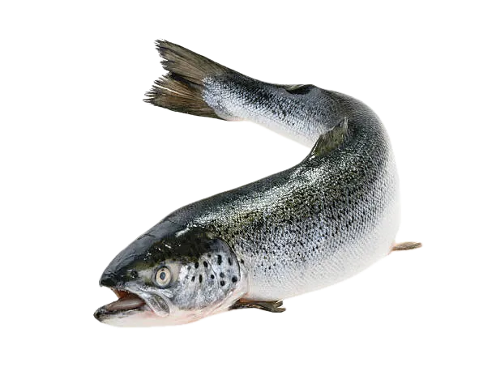

River Navigators
Salmon
Salmon are champions of endurance, imprinting on natal streams before navigating thousands of miles at sea. Their migrations carry ocean nutrients back into forests and freshwater habitats.
Interesting Facts
- They can leap waterfalls higher than their own bodies to reach upstream spawning grounds.
- After laying eggs, adults enrich rivers with marine nutrients vital for bears, eagles, and entire watersheds.
- Salmon rely on Earth’s magnetic field like a compass to find their way home.
